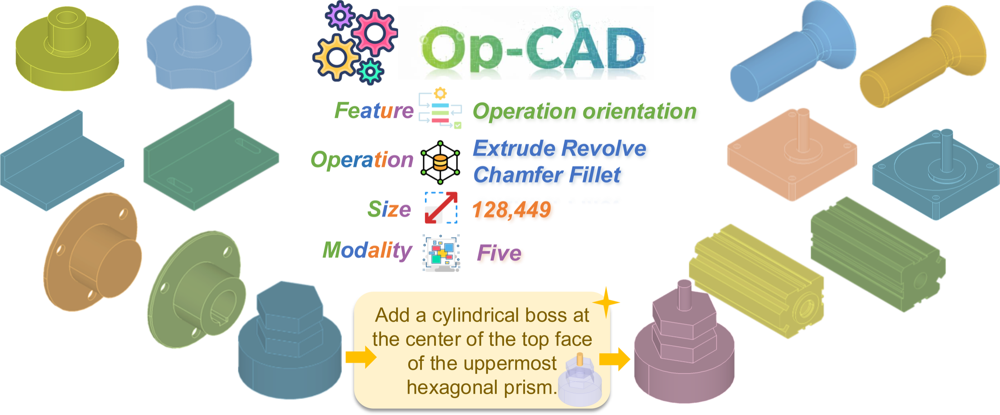
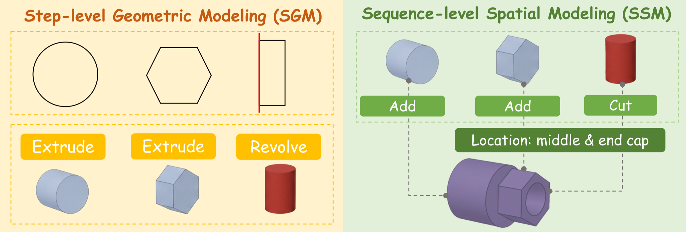
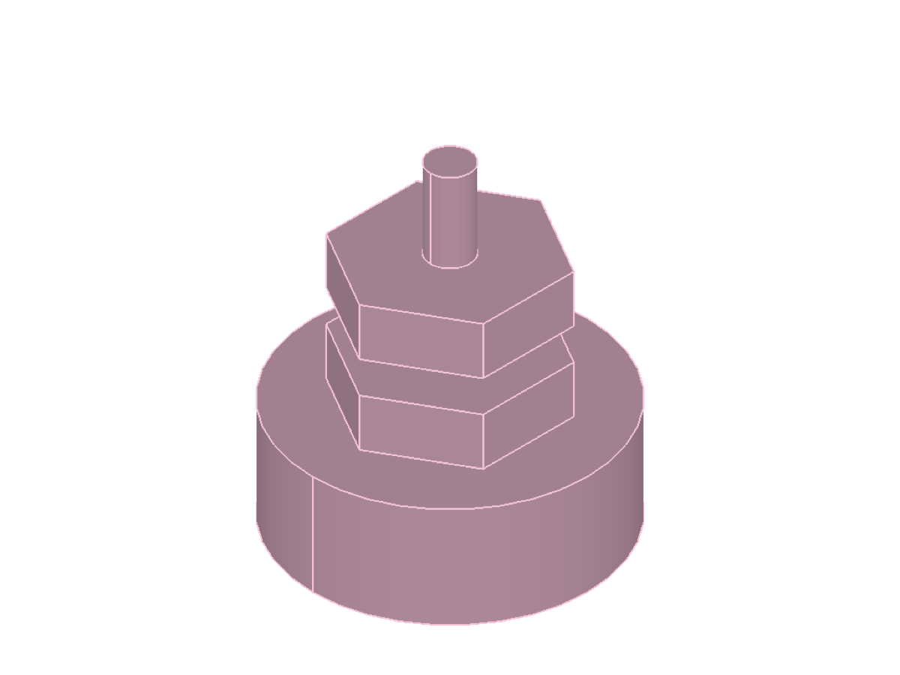
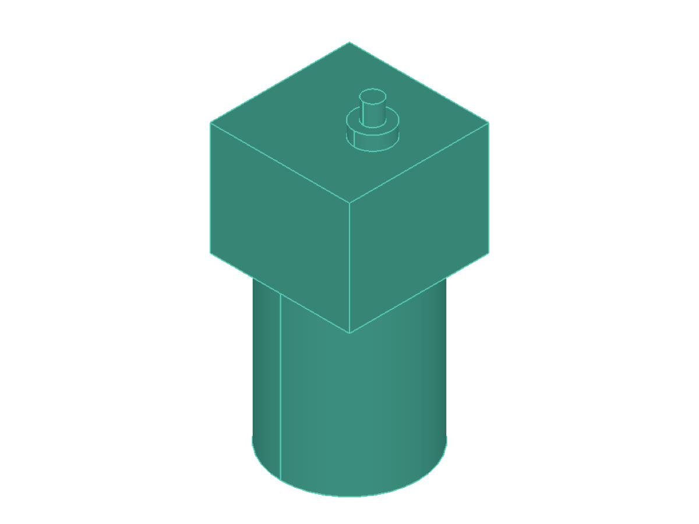
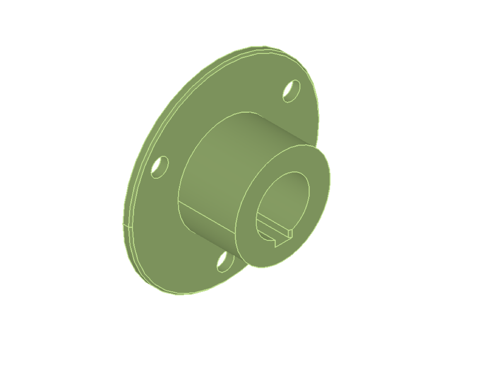
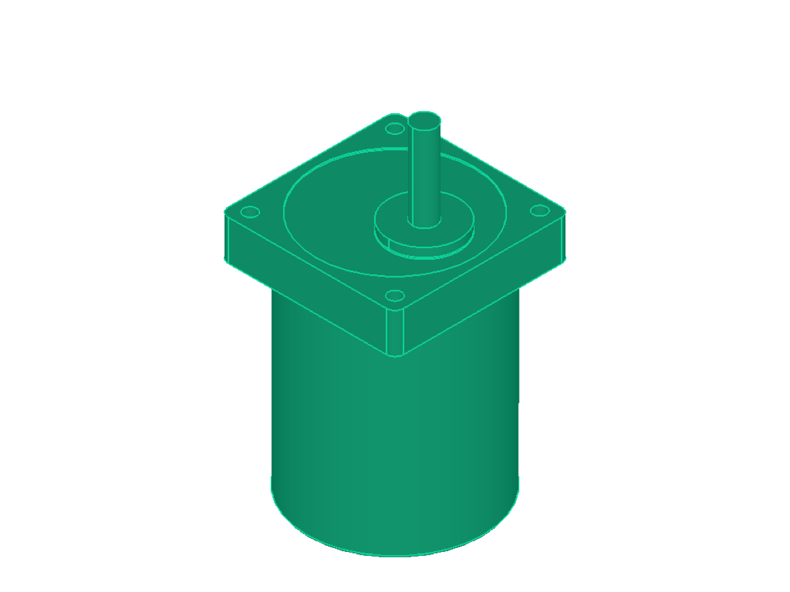
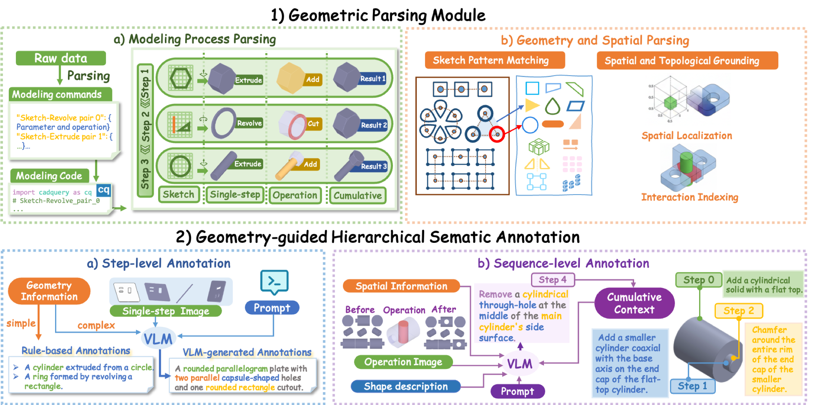
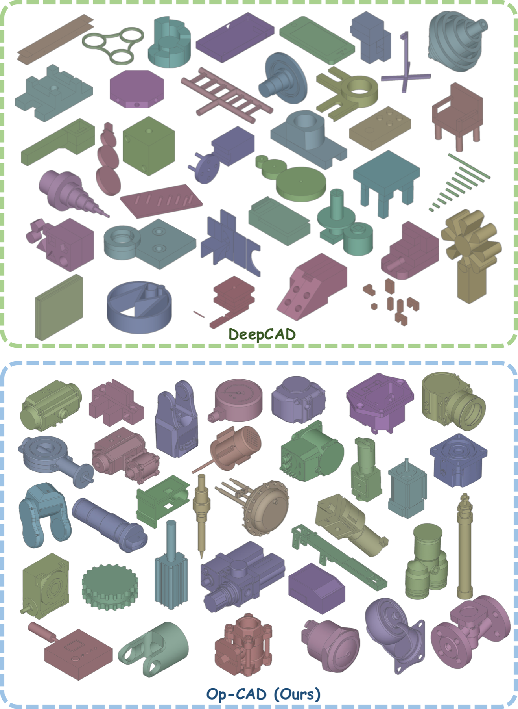
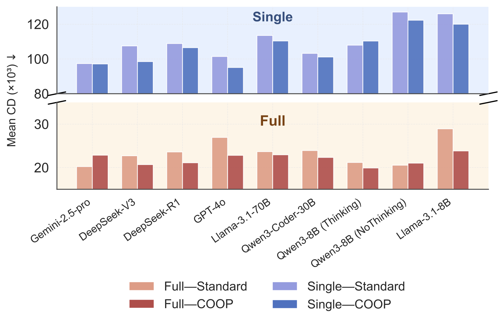
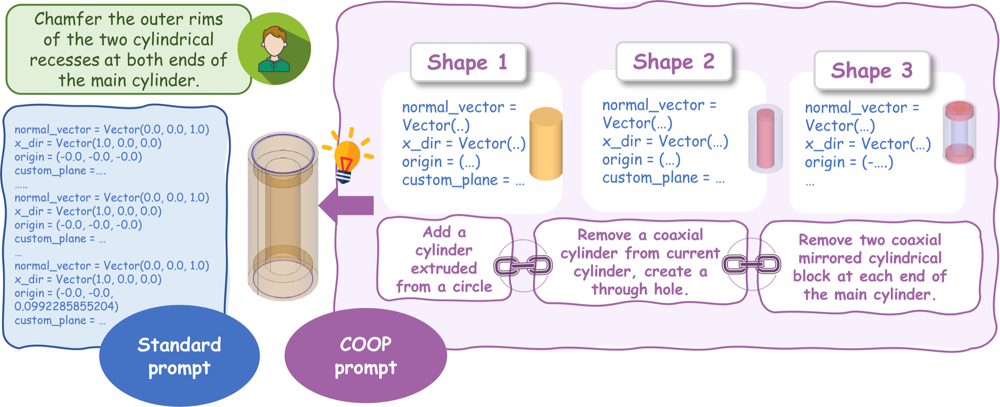

Benchmarking & Investigating
Operation-oriented CAD Generation
A large-scale multimodal benchmark that teaches models to reason about CAD the way engineers build it: one operation at a time.
The Hong Kong University of Science and Technology (Guangzhou)

01 / Overview
CAD is a sequence,
not just a final shape.
Existing CAD generation benchmarks often judge only the final geometry. Op-CAD exposes the construction history: which feature is created, where it is placed, how it interacts with earlier geometry, and what the cumulative model looks like after every step.
We introduce the first large-scale multimodal dataset for operation-oriented CAD generation, a geometry-guided annotation pipeline, and CF-IoU for evaluating chamfer and fillet edge selection.

Generate the shape and parameters for each individual modeling operation.
Place operations correctly within the full procedural construction history.
02 / Dataset
Long, diverse modeling histories.
Op-CAD covers Extrude, Revolve, Chamfer, and Fillet across five complementary modalities. Its average sequence length is eight times that of DeepCAD, creating a substantially harder benchmark for long-horizon geometric reasoning.
Inside each sample
Every operation is grounded in geometry and context.
Each instance pairs executable CadQuery code with step-level geometry, operation images, cumulative context, and structured descriptions.




03 / Construction
Geometry-guided annotation,
from raw code to semantics.
The pipeline parses CAD programs into valid operations, extracts exact geometric and spatial priors, and uses those priors to guide hierarchical VLM annotation at both step and sequence levels.

CAD parsing
Decompose modeling code into sketch, single-step operation, and cumulative geometry.
Grounded annotation
Use exact geometry and topology to reduce hallucination in step- and sequence-level descriptions.
04 / Findings
Current models struggle most
with edge-level operations.
Across eight LLMs, chamfer and fillet expose the largest gap in spatial precision. CF-IoU measures whether the correct edges were selected, while OP-Llama-8B and Chain-of-Operation prompting show that targeted data and structured reasoning can close much of the gap.



05 / Open release
Everything needed to reproduce and extend Op-CAD.
Citation
Cite Op-CAD
@InProceedings{pmlr-v306-bai26a,
title = {Op-{CAD}: Benchmarking and Investigating Operation-oriented {CAD} Generation},
author = {Bai, Yixue and Gu, Yufei and Xie, Zeke},
booktitle = {Proceedings of the 43rd International Conference on Machine Learning},
pages = {5245--5264},
year = {2026},
volume = {306},
series = {Proceedings of Machine Learning Research},
publisher = {PMLR},
url = {https://proceedings.mlr.press/v306/bai26a.html}
}